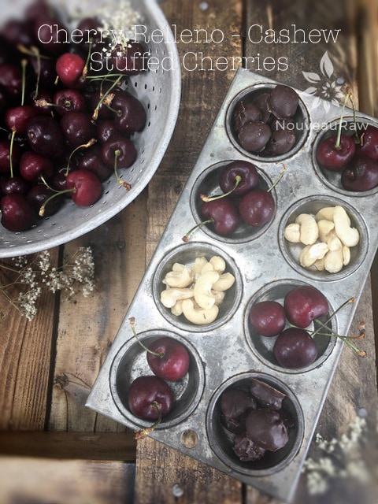
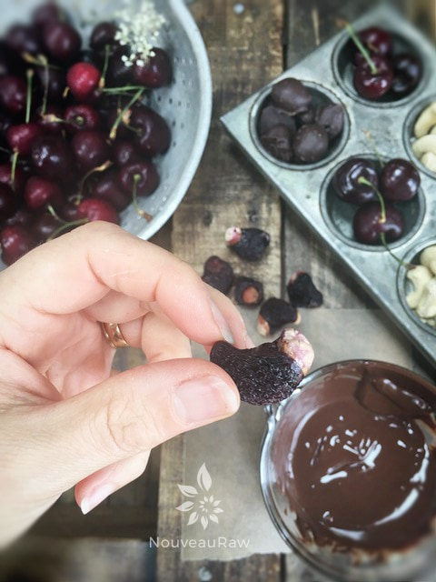

Cashew Cherry Relleno

~ raw, vegan, gluten-free ~
I will admit that when making these, they start out looking a bit alien… not that there is anything wrong with that (for all you aliens out there ;)… but the end result is a chocolatey, nugget filled with a chewy cherry and crunchy cashews.
For this recipe, I used Bing and Reiner cherries, but you could use any variety. Just avoid cherries that are soft, have wrinkled skin, are leaking and sticky, or that have any visible signs of decay.
Rainer cherries are also known as the “white cherry” because they have a white/creamy flesh and the skin is yellowish-red once fully ripened.
They are one of the more fragile cherries when it comes to handling. They have to be picked a cherry at a time. Growing them isn’t easy, either. To put the blush on the cherries, strips of reflective material are placed under the trees a few weeks before the harvest. This reflected sunlight bounces onto the fruit and created brighter “cheeks.” Purely for cosmetic reasons. Do you find that as fascinating as I do? :)
Ingredients:
- Wash / dry, remove the stems and pits from the cherries. You can leave the stems on for fun if you wish. I did on a few.
- Stuff a cashew nut into each cherry.
- Place the stuffed cherry on the mesh sheet that comes with the dehydrator. It is important that the stuffed cherries are dry before placing them on the mesh sheet. I pat them with a paper towel.
- If they are wet going into the dehydrator, the water will bring out the juices in the cherry/ginger and create a sticky puddle underneath it.
- Dehydrate at 145 degrees (F) for 1 hour, then reduce the temperature to 115 degrees (F) and continue to dry for approximately 24 hours or until dry. Remove and allow them to cool to room temperature.
- If making this raw – Prepare the hardening chocolate recipe.
- If using store-bought chocolate chips –
- Melting in a double boiler – Bring the water to a simmer, pour the bag of chocolate chips into your double boiler. Stir constantly, once most of the chocolate chips are melted reduce the heat to the lowest setting. Continue stirring until all of the chocolate is melted. Be careful that you don’t allow any moisture into the pan; this will cause your chocolate to seize. Once melted, turn the heat off and start dipping the cherries.
- Dip each dried, stuffed cherry into the chocolate, coating it well, then tap the excess chocolate.
- I use a small fork as a platform to hold the cherry, tap it on the side of the bowl, scrape the bottom of the fork with the edge of a spatula and slide the cherry onto the tray with a toothpick.
- Place on a solid surface (etc. cutting board, tray, teflex sheet, wax paper).
- Allow the chocolate to harden.
- Store in an airtight container. If your house is warm, store them in the fridge or freezer, just be sure that they are well sealed. I kept a jar of them in the cabinet for several weeks, and they stayed fresh.
Culinary Explanations:
- Why do I start the dehydrator at 145 degrees (F)? Click (here) to learn the reason behind this.
- When working with fresh ingredients, it is important to taste test as you build a recipe. Learn why (here).
- Don’t own a dehydrator? Learn how to use your oven (here). I do however truly believe that it is a worthwhile investment. Click (here) to learn what I use.


Yes, I know. Not attractive looking but I thought it was important for you to see what the dehydrated product looked like. A cashew being hugged by the skin of a cherry. hehe

Dip in chocolate and place on parchment paper to dry.
© AmieSue.com